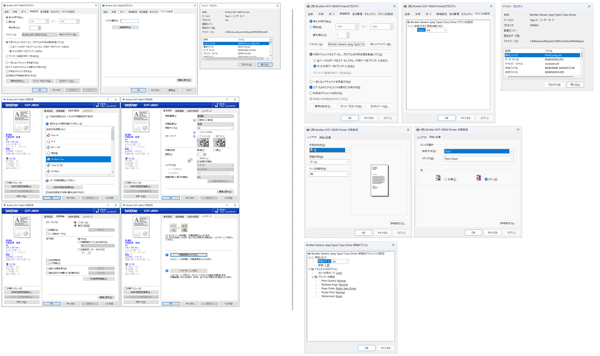

ブラザー DCP-J982N
対応状況
セットアップは未対応です。
サイトに未対応との表記がありました。
OSに標準で含まれるドライバーで基本的な印刷機能をサポートします。
代替手段
代替手段があります。
LAN 接続
LAN で接続し Microsoft IPP Class Driver 対応プリンターとしてインストールする方法です。
デバイスの追加 で DCP_J987N_BRxxxx のように候補が表示されます。
これの右横にある デバイスの追加 ボタンをクリックすると、インストールできます。
テスト印刷もできました。
USB 接続
USB 接続し、数分間待機していると、USB プリンターがインストールされました。
但し、接続した直後は、ドライバーがありません、使用できませんの状態でした。
こちらは USB 接続にも関わらず Microsoft IPP Class Driver プリンタードライバーが使用されていました。
IPP over USB で接続されるようです。
テスト印刷もできました。
プリンタープロパティー画面の比較
x64 と ARM64
体験に満足したかどうか
本件に関して
Copilot+ PC(Arm 版 Windows 11) 上の体験に満足しましたか、また、メイン PC を移行したいですか。
いいえ。未だ移行したくありません。
私の DCP-J982N のユースケースとして、つぎのようなものがあります:
レジュメなどを A4 白黒・高速印刷しています
カラーの書類を A4 カラー・高速印刷しています
CD レーベルの印刷をしています
これらのユースケースを満たす事ができていません。メイン PC の移行は時期尚早と考えます。